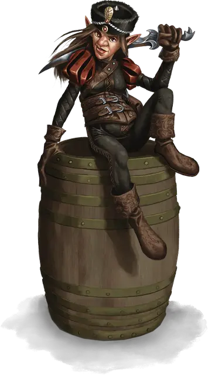

Джэмна Глимсилвер
Jamna Gleamsilver
Маленький Гуманоид (Гном), нейтральный, именной НИП

Класс Доспеха 15 (кожаный доспех)
Хиты 22 (4к6 + 8)
Скорость 25 футов
| мод | спас | ||
|---|---|---|---|
| СИЛ | 8 | −1 | −1 |
| ЛОВ | 17 | +3 | +5 |
| ТЕЛ | 14 | +2 | +2 |
| мод | спас | ||
|---|---|---|---|
| ИНТ | 15 | +2 | +4 |
| МДР | 10 | +0 | +0 |
| ХАР | 12 | +1 | +1 |
Навыки Акробатика +5, Восприятие +4, Обман +3, Проницательность +2, Скрытность +7, Убеждение +3
Чувства тёмное зрение 60 футов, пассивное Восприятие 14
Языки Общий, Гномий, Гоблинский, Сильван
Опасность 1 (200 опыта)
Бонус мастерства +2
Особенности
Хитрое действие. Джэмна может совершать как бонусное действие, действия Рывок, Отход или Засада.
Гномья хитрость. Джэмна совершает с преимуществом спасброски Интеллекта, Мудрости и Харизмы против магии.
Использование заклинаний. Джэмна является заклинателем 4-го уровня. Её базовой характеристикой является Интеллект (Сл спасброска от заклинаний 12, +4 к попаданию атаками заклинаниями). У Джэмны подготовлены следующие заклинания волшебника:
• Заговоры (по желанию): волшебная рука [mage hand], малая иллюзия [minor illusion], фокусы [prestidigitation], луч холода [ray of frost]
• 1 уровень (3 ячейки): очарование личности [charm person], сверкающие брызги [color spray], маскировка [disguise self], скороход [longstrider]
Действия
Мультиатака. Джэмна совершает две атаки коротким мечом.
Короткий меч. Рукопашная атака оружием: +5 к попаданию, досягаемость 5 футов, одна цель. Попадание: 6 (1к6+3) колющего урона или 9 (1к6+3 плюс 1к6) колющего урона, если цель Среднего размера или больше.